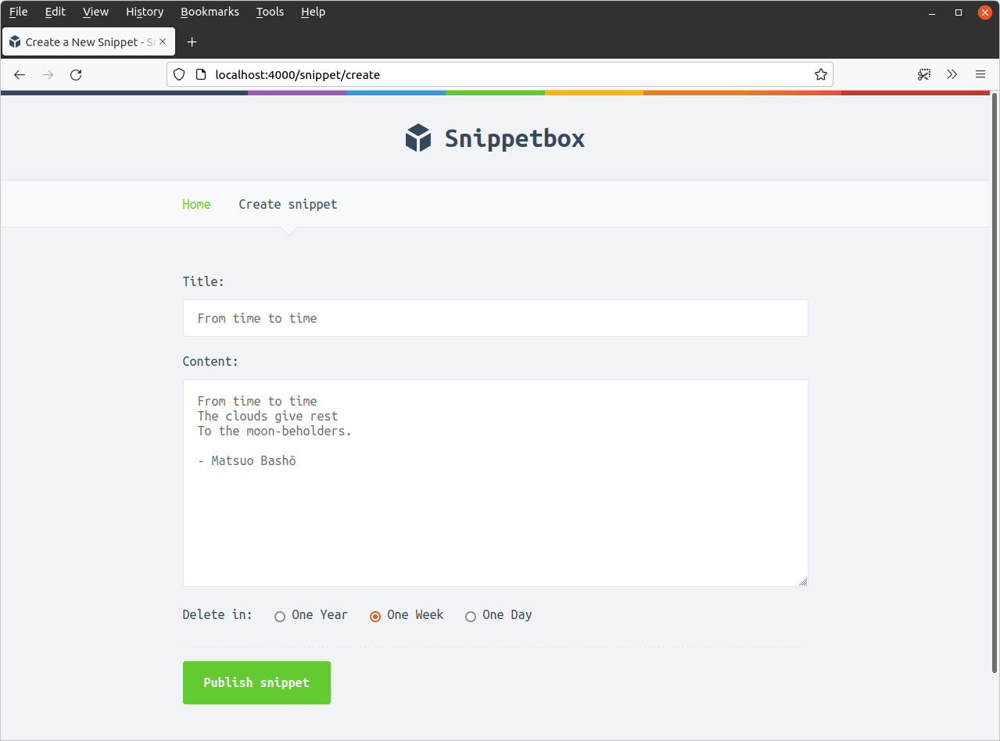
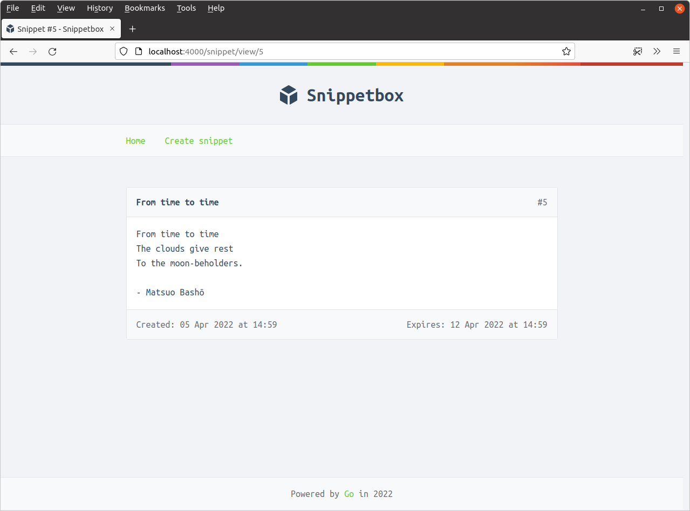

تجزیه دادههای فرم
به لطف کاری که قبلاً در بخش پایهها انجام دادیم، هر درخواست POST /snippets/create در حال حاضر به handler snippetCreatePost ما ارسال میشود. حالا این handler را بهروزرسانی میکنیم تا دادههای فرم را هنگام ارسال پردازش و استفاده کند.
در سطح بالا، میتوانیم این را به دو مرحله مجزا تقسیم کنیم.
ابتدا، باید از متد
r.ParseForm()برای تجزیه بدنه درخواست استفاده کنیم. این متد بررسی میکند که بدنه درخواست به درستی فرمت شده است و سپس دادههای فرم را در نقشهr.PostFormدرخواست ذخیره میکند. اگر هرگونه خطایی هنگام تجزیه بدنه رخ دهد (مثلاً بدنه وجود ندارد یا برای پردازش خیلی بزرگ است) آنگاه یک خطا برمیگرداند. متدr.ParseForm()همچنین ناتوانساز است؛ میتواند به طور ایمن چندین بار روی همان درخواست فراخوانی شود بدون هیچ عارضه جانبی.سپس میتوانیم با استفاده از متد
r.PostForm.Get()به دادههای فرم موجود درr.PostFormدسترسی پیدا کنیم. به عنوان مثال، میتوانیم مقدار فیلدtitleرا باr.PostForm.Get("title")بازیابی کنیم. اگر نام فیلد مطابقتکنندهای در فرم وجود نداشته باشد، رشته خالی""برمیگرداند.
فایل cmd/web/handlers.go خود را باز کنید و آن را برای شامل کردن کد زیر بهروزرسانی کنید:
package main ... func (app *application) snippetCreatePost(w http.ResponseWriter, r *http.Request) { // First we call r.ParseForm() which adds any data in POST request bodies // to the r.PostForm map. This also works in the same way for PUT and PATCH // requests. If there are any errors, we use our app.ClientError() helper to // send a 400 Bad Request response to the user. err := r.ParseForm() if err != nil { app.clientError(w, http.StatusBadRequest) return } // Use the r.PostForm.Get() method to retrieve the title and content // from the r.PostForm map. title := r.PostForm.Get("title") content := r.PostForm.Get("content") // The r.PostForm.Get() method always returns the form data as a *string*. // However, we're expecting our expires value to be a number, and want to // represent it in our Go code as an integer. So we need to manually convert // the form data to an integer using strconv.Atoi(), and we send a 400 Bad // Request response if the conversion fails. expires, err := strconv.Atoi(r.PostForm.Get("expires")) if err != nil { app.clientError(w, http.StatusBadRequest) return } id, err := app.snippets.Insert(title, content, expires) if err != nil { app.serverError(w, r, err) return } http.Redirect(w, r, fmt.Sprintf("/snippet/view/%d", id), http.StatusSeeOther) }
خوب، بیایید این را امتحان کنیم! برنامه را مجدداً راهاندازی کنید و سعی کنید فرم را با عنوان و محتوای یک اسنیپت پر کنید، کمی شبیه این:

و سپس فرم را ارسال کنید. اگر همه چیز کار کرده باشد، باید به صفحهای که اسنیپت جدید شما را نمایش میدهد هدایت شوید، به این صورت:

اطلاعات اضافی
متد PostFormValue
بسته net/http همچنین متد r.PostFormValue() را ارائه میدهد که اساساً یک تابع میانبر است که r.ParseForm() را برای شما فراخوانی میکند و سپس مقدار فیلد مناسب را از r.PostForm واکشی میکند.
توصیه میکنم از این میانبر اجتناب کنید چون به طور خاموش هرگونه خطایی که توسط r.ParseForm() برگردانده میشود را نادیده میگیرد. اگر از آن استفاده کنید، به این معنی است که مرحله تجزیه میتواند خطاهایی را برای کاربران مواجه کند و شکست بخورد، اما هیچ مکانیزم بازخوردی برای اطلاع دادن به آنها (یا شما) از مشکل وجود ندارد.
فیلدهای چند مقداری
به طور دقیق، متد r.PostForm.Get() که در این فصل استفاده کردهایم فقط اولین مقدار را برای یک فیلد فرم خاص برمیگرداند. این به این معنی است که نمیتوانید از آن با فیلدهای فرمی که به طور بالقوه چندین مقدار ارسال میکنند، مانند یک گروه چکباکس، استفاده کنید.
<input type="checkbox" name="items" value="foo"> Foo <input type="checkbox" name="items" value="bar"> Bar <input type="checkbox" name="items" value="baz"> Baz
در این مورد باید مستقیماً با نقشه r.PostForm کار کنید. نوع زیرین نقشه r.PostForm url.Values است که به نوبه خود نوع زیرین map[string][]string را دارد. بنابراین، برای فیلدهایی با چندین مقدار میتوانید روی نقشه زیرین حلقه بزنید تا به آنها دسترسی پیدا کنید، به این صورت:
for i, item := range r.PostForm["items"] { fmt.Fprintf(w, "%d: Item %s\n", i, item) }
محدود کردن اندازه فرم
به طور پیشفرض، فرمهای ارسال شده با متد POST محدودیت اندازه 10 مگابایت داده دارند. استثنای این مورد این است که اگر فرم شما ویژگی enctype="multipart/form-data" را داشته باشد و داده چندبخشی ارسال کند، در این صورت هیچ محدودیت پیشفرضی وجود ندارد.
اگر میخواهید محدودیت 10 مگابایت را تغییر دهید، میتوانید از تابع http.MaxBytesReader() به این صورت استفاده کنید:
// Limit the request body size to 4096 bytes r.Body = http.MaxBytesReader(w, r.Body, 4096) err := r.ParseForm() if err != nil { http.Error(w, "Bad Request", http.StatusBadRequest) return }
با این کد فقط 4096 بایت اول بدنه درخواست در طول r.ParseForm() خوانده میشود. تلاش برای خواندن فراتر از این محدودیت باعث میشود MaxBytesReader یک خطا برگرداند که بعداً توسط r.ParseForm() نمایش داده میشود.
علاوه بر این — اگر محدودیت برخورد شود — MaxBytesReader یک پرچم روی http.ResponseWriter تنظیم میکند که به سرور دستور میدهد اتصال TCP زیرین را ببندد.
پارامترهای رشته پرسوجو
اگر فرمی دارید که دادهها را با استفاده از متد HTTP GET ارسال میکند، به جای POST، دادههای فرم به عنوان پارامترهای رشته پرسوجو URL گنجانده میشوند. به عنوان مثال، اگر یک فرم HTML دارید که به این صورت است:
<form action='/foo/bar' method='GET'> <input type='text' name='title'> <input type='text' name='content'> <input type='submit' value='Submit'> </form>
وقتی فرم ارسال میشود، یک درخواست GET با URL که به این صورت است ارسال میکند: /foo/bar?title=value&content=value.
میتوانید مقادیر پارامترهای رشته پرسوجو را در handlerهای خود از طریق متد r.URL.Query().Get() بازیابی کنید. این همیشه یک مقدار رشته برای یک پارامتر برمیگرداند، یا رشته خالی "" اگر پارامتر مطابقتکنندهای وجود نداشته باشد. به عنوان مثال:
func exampleHandler(w http.ResponseWriter, r *http.Request) { title := r.URL.Query().Get("title") content := r.URL.Query().Get("content") ... }
نقشه r.Form
یک روش جایگزین برای دسترسی به پارامترهای رشته پرسوجو از طریق نقشه r.Form است. این شبیه نقشه r.PostForm است که در این فصل استفاده کردهایم، به جز اینکه شامل دادههای فرم از هر بدنه درخواست POST و هر پارامتر رشته پرسوجو است.
بیایید بگوییم که کدی در handler خود دارید که به این صورت است:
err := r.ParseForm() if err != nil { http.Error(w, "Bad Request", http.StatusBadRequest) return } title := r.Form.Get("title")
در این کد، خط r.Form.Get("title") مقدار title را از بدنه درخواست POST یا از یک پارامتر رشته پرسوجو با نام title برمیگرداند. در صورت بروز تضاد، مقدار بدنه درخواست بر پارامتر رشته پرسوجو اولویت دارد.
استفاده از r.Form میتواند بسیار مفید باشد اگر میخواهید برنامه شما نسبت به نحوه ارسال مقادیر داده به آن بیتفاوت باشد. اما خارج از آن سناریو، r.Form هیچ مزیتی ارائه نمیدهد و واضحتر و صریحتر است که دادهها را از بدنه درخواست POST از طریق r.PostForm یا از پارامترهای رشته پرسوجو از طریق r.URL.Query().Get() بخوانید.